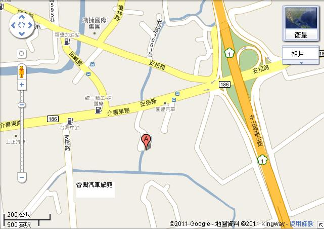

2011年2月19、20日(週六、週日); 一夜兩天
週六 上午9點至週日下午4點為止。
上午八點半報到
1994 年受俱足戒，1997 年跟隨帕奧禪師修學。之後，受聘在帕奧禪林多處分支機構指導禪修。2005 年以來多次來台教授禪法。主要使用語言有緬語、巴利語、英語。
成功大學研究生。
止禪(四禪八定)與觀禪(毘婆舍那)。由出入息念(觀呼吸)、四大界差別觀。
◎持午(晚上不提供膳食)。
地址：高雄縣岡山鎮大遼路8之22號
(下國道中山高速公路往岡山市區方向)
電話：(07) -627- 0171 持侑法師
※因場地容納有限，請預先報名，額滿為止
報名表：PDF； doc (.rtf)
1. 搭台鐵岡山火車站下車，搭計程車約150元。
2.自行開車走中山高從岡山交流道下，往岡山市區的方向，左邊對面車道中油加油站友情站左轉進入友情路，直走看見香閱汽車旅館(尚未到)，路口淨覺寺招牌，左轉巷子進入淨覺寺。
Google 地圖:
檢視較大的地圖